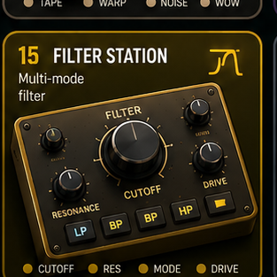

Filter Station
Machine page with generated audio and local pad memory.
Layer: local pad memory enabled.
Use: play pads or load local audio.
Input: touch, mouse, keyboard, and MIDI-ready pads.

Machine page with generated audio and local pad memory.